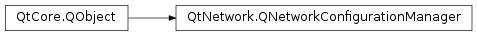

QNetworkConfigurationManager¶
Note
This class was introduced in Qt 4.7.
Synopsis¶
Functions¶
- def
allConfigurations([flags=QNetworkConfiguration.StateFlags()]) - def
capabilities() - def
configurationFromIdentifier(identifier) - def
defaultConfiguration() - def
isOnline()
Slots¶
- def
updateConfigurations()
Signals¶
- def
configurationAdded(config) - def
configurationChanged(config) - def
configurationRemoved(config) - def
onlineStateChanged(isOnline) - def
updateCompleted()
Detailed Description¶
The
PySide2.QtNetwork.QNetworkConfigurationManagerclass manages the network configurations provided by the system.
PySide2.QtNetwork.QNetworkConfigurationManagerprovides access to the network configurations known to the system and enables applications to detect the system capabilities (with regards to network sessions) at runtime.A
PySide2.QtNetwork.QNetworkConfigurationabstracts a set of configuration options describing how a network interface has to be configured to connect to a particular target network.PySide2.QtNetwork.QNetworkConfigurationManagermaintains and updates the global list of QNetworkConfigurations. Applications can access and filter this list viaPySide2.QtNetwork.QNetworkConfigurationManager.allConfigurations(). If a new configuration is added or an existing one is removed or changed thePySide2.QtNetwork.QNetworkConfigurationManager.configurationAdded(),PySide2.QtNetwork.QNetworkConfigurationManager.configurationRemoved()andPySide2.QtNetwork.QNetworkConfigurationManager.configurationChanged()signals are emitted respectively.The
PySide2.QtNetwork.QNetworkConfigurationManager.defaultConfiguration()can be used when intending to immediately create a new network session without caring about the particular configuration. It returns aQNetworkConfiguration.Discoveredconfiguration. If there are not any discovered ones an invalid configuration is returned.Some configuration updates may require some time to perform updates. A WLAN scan is such an example. Unless the platform performs internal updates it may be required to manually trigger configuration updates via
QNetworkConfigurationManager.updateConfigurations(). The completion of the update process is indicated by emitting thePySide2.QtNetwork.QNetworkConfigurationManager.updateCompleted()signal. The update process ensures that every existingPySide2.QtNetwork.QNetworkConfigurationinstance is updated. There is no need to ask for a renewed configuration list viaPySide2.QtNetwork.QNetworkConfigurationManager.allConfigurations().
-
class
PySide2.QtNetwork.QNetworkConfigurationManager([parent=nullptr])¶ Parameters: parent – PySide2.QtCore.QObjectConstructs a
PySide2.QtNetwork.QNetworkConfigurationManagerwith the givenparent.Note that to ensure a valid list of current configurations immediately available, updating is done during construction which causes some delay.
-
PySide2.QtNetwork.QNetworkConfigurationManager.Capability¶ Specifies the system capabilities of the bearer API. The possible values are:
Constant Description QNetworkConfigurationManager.CanStartAndStopInterfaces Network sessions and their underlying access points can be started and stopped. If this flag is not set PySide2.QtNetwork.QNetworkSessioncan only monitor but not influence the state of access points. On some platforms this feature may require elevated user permissions. This option is platform specific and may not always be available.QNetworkConfigurationManager.DirectConnectionRouting Network sessions and their sockets can be bound to a particular network interface. Any packet that passes through the socket goes to the specified network interface and thus disregards standard routing table entries. This may be useful when two interfaces can reach overlapping IP ranges or an application has specific needs in regards to target networks. This option is platform specific and may not always be available. QNetworkConfigurationManager.SystemSessionSupport If this flag is set the underlying platform ensures that a network interface is not shut down until the last network session has been closed(). This works across multiple processes. If the platform session support is missing this API can only ensure the above behavior for network sessions within the same process. In general mobile platforms have such support whereas most desktop platform lack this capability.QNetworkConfigurationManager.ApplicationLevelRoaming The system gives applications control over the systems roaming behavior. Applications can initiate roaming (in case the current link is not suitable) and are consulted if the system has identified a more suitable access point. QNetworkConfigurationManager.ForcedRoaming The system disconnects an existing access point and reconnects via a more suitable one. The application does not have any control over this process and has to reconnect its active sockets. QNetworkConfigurationManager.DataStatistics If this flag is set PySide2.QtNetwork.QNetworkSessioncan provide statistics about transmitted and received data.QNetworkConfigurationManager.NetworkSessionRequired If this flag is set the platform requires that a network session is created before network operations can be performed.
Note
This enum was introduced in Qt 4.7.
-
PySide2.QtNetwork.QNetworkConfigurationManager.allConfigurations([flags=QNetworkConfiguration.StateFlags()])¶ Parameters: flags – PySide2.QtNetwork.QNetworkConfiguration.StateFlagsReturn type: Returns the list of configurations which comply with the given
filter.By default this function returns all (defined and undefined) configurations.
A wireless network with a particular SSID may only be accessible in a certain area despite the fact that the system has a valid configuration for it. Therefore the filter flag may be used to limit the list to discovered and possibly connected configurations only.
If
filteris set to zero this function returns all possible configurations.Note that this function returns the states for all configurations as they are known at the time of this function call. If for instance a configuration of type WLAN is defined the system may have to perform a WLAN scan in order to determine whether it is actually available. To obtain the most accurate state
PySide2.QtNetwork.QNetworkConfigurationManager.updateConfigurations()should be used to update each configuration’s state. Note that such an update may require some time. It’s completion is signalled byPySide2.QtNetwork.QNetworkConfigurationManager.updateCompleted(). In the absence of a configuration update this function returns the best estimate at the time of the call. Therefore, if WLAN configurations are of interest, it is recommended thatPySide2.QtNetwork.QNetworkConfigurationManager.updateConfigurations()is called once afterPySide2.QtNetwork.QNetworkConfigurationManagerinstantiation (WLAN scans are too time consuming to perform in constructor). After this the data is kept automatically up-to-date as the system reports any changes.
-
PySide2.QtNetwork.QNetworkConfigurationManager.capabilities()¶ Return type: PySide2.QtNetwork.QNetworkConfigurationManager.CapabilitiesReturns the capabilities supported by the current platform.
-
PySide2.QtNetwork.QNetworkConfigurationManager.configurationAdded(config)¶ Parameters: config – PySide2.QtNetwork.QNetworkConfiguration
-
PySide2.QtNetwork.QNetworkConfigurationManager.configurationChanged(config)¶ Parameters: config – PySide2.QtNetwork.QNetworkConfiguration
-
PySide2.QtNetwork.QNetworkConfigurationManager.configurationFromIdentifier(identifier)¶ Parameters: identifier – unicode Return type: PySide2.QtNetwork.QNetworkConfigurationReturns the
PySide2.QtNetwork.QNetworkConfigurationforidentifier; otherwise returns an invalidPySide2.QtNetwork.QNetworkConfiguration.See also
-
PySide2.QtNetwork.QNetworkConfigurationManager.configurationRemoved(config)¶ Parameters: config – PySide2.QtNetwork.QNetworkConfiguration
-
PySide2.QtNetwork.QNetworkConfigurationManager.defaultConfiguration()¶ Return type: PySide2.QtNetwork.QNetworkConfigurationReturns the default configuration to be used. This function always returns a discovered configuration; otherwise an invalid configuration.
In some cases it may be required to call
PySide2.QtNetwork.QNetworkConfigurationManager.updateConfigurations()and wait for thePySide2.QtNetwork.QNetworkConfigurationManager.updateCompleted()signal before calling this function.
-
PySide2.QtNetwork.QNetworkConfigurationManager.isOnline()¶ Return type: PySide2.QtCore.boolReturns
trueif the system is considered to be connected to another device via an active network interface; otherwise returnsfalse.This is equivalent to the following code snippet:
mgr = QNetworkConfigurationManager() activeConfigs = mgr.allConfigurations(QNetworkConfiguration.Active) if activeConfigs: assert(mgr.isOnline()) else: assert(not mgr.isOnline())
-
PySide2.QtNetwork.QNetworkConfigurationManager.onlineStateChanged(isOnline)¶ Parameters: isOnline – PySide2.QtCore.bool
-
PySide2.QtNetwork.QNetworkConfigurationManager.updateCompleted()¶
-
PySide2.QtNetwork.QNetworkConfigurationManager.updateConfigurations()¶ Initiates an update of all configurations. This may be used to initiate WLAN scans or other time consuming updates which may be required to obtain the correct state for configurations.
This call is asynchronous. On completion of this update the
PySide2.QtNetwork.QNetworkConfigurationManager.updateCompleted()signal is emitted. If new configurations are discovered or old ones were removed or changed the update process may trigger the emission of one or multiplePySide2.QtNetwork.QNetworkConfigurationManager.configurationAdded(),PySide2.QtNetwork.QNetworkConfigurationManager.configurationRemoved()andPySide2.QtNetwork.QNetworkConfigurationManager.configurationChanged()signals.If a configuration state changes as a result of this update all existing
PySide2.QtNetwork.QNetworkConfigurationinstances are updated automatically.
© 2018 The Qt Company Ltd. Documentation contributions included herein are the copyrights of their respective owners. The documentation provided herein is licensed under the terms of the GNU Free Documentation License version 1.3 as published by the Free Software Foundation. Qt and respective logos are trademarks of The Qt Company Ltd. in Finland and/or other countries worldwide. All other trademarks are property of their respective owners.